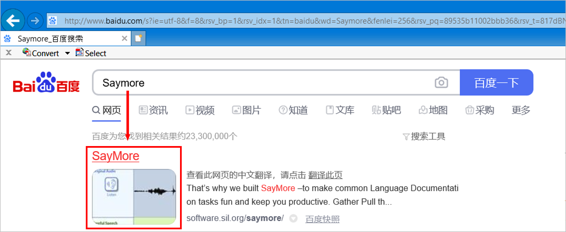
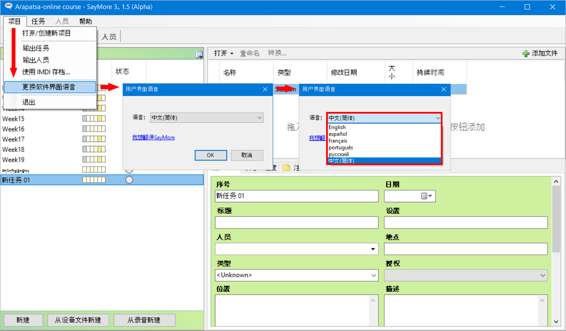
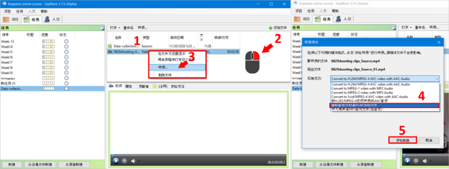
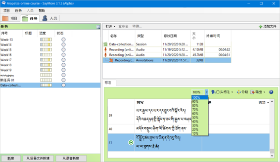

གཏམ་བཤད་དང་ཡང་ན་སློབ་ཁྲིད་ཀྱི་སྒྲ་དང་བརྙན་གྱི་རིགས་ཡིག་འབེབ་མཉེན་ཆས་(Saymore) སྤྱད་ནས་ཡི་གེར་དབབ་པ་དང་། སྒྲ་དེ་ཡང་སྔ་ཕྱི་བྱས་ནས་སྐད་ཡིག་གཉིས་ཀྱི་ནང་དབབ་པ། དཔེར་ན། བོད་སྐད་དང་རྒྱ་སྐད། ཡང་ན་ཡིག་སྐད་དང་ཡུལ་སྐད་གཉིས་བཅས་གང་རུང་ནང་དབབ་ཚུལ་གྱི་ལམ་སྟོན་ཞིག་ཡིན།
👉 མཉེན་ཆས་འདི་(དྲ་ཐག)འདི་ནས་ཕབ་ལེན། 在此网站下载
👉 ཡང་ན་(百度)ནས་ཐད་ཀར་ཕབ་ལེན། 或者直接从百度下载
🢣 ༡ རང་གི་གློག་ཀླད་ནང་ཕབ་ལེན་དང་། 下载到自己的电脑
🢣 ༢ འཇུག་སྤྲོད་བྱོས། 安装
🔊 གསལ་བཤད་ཅིག་ནི། ཡིག་འབེབ་མཉེན་ཆས་(Saymore)འདི་སྒེའུ་ཁུང་རྟགས་ཅན་གྱི་གླག་ཀླད་ནང་མ་གཏོགས་ཀུ་ཤུ་རྟགས་ཅན་གྱི་གློག་ཀླད་ནང་བཀོལ་སྤྱོད་བྱེད་མི་ཐུབ། 提示：此幕字软件只能安装到Windows系统，不能安装到苹果系统。

🢣 སྒྲ་བརྙན་གང་རུང་གི་རྒྱུ་ཆའི་གནས་ཚུལ་ཞིབ་ཕྲ་འགོད་ཐུབ་པ། 能详细记载任何音视频的内容
🢣 ཉིན་རེ་དང་ཟླ་རེའི་ལས་ཀའི་གནས་ཚུལ་རྣམས་རང་འགུལ་གྱིས་ཉར་བ། 能自动保存每日每月的工作情况
🢣 བརྙན་རིགས་ཐད་ཀར་སྒྲ་ལ་བསྒྱུར་ཐུབ་པ། 能视频内容直接转换音频
🢣 སྒྲ་དེ་ཐད་ཀར་སྐད་རིགས་གཉིས་ཀྱི་ནང་དབབ་ཐུབ་པ། 音频能直接记载到两种文字
🢣 ཕབ་ཟིན་པ་རྣམས་རྣམ་སྒྲིག(格式)འདྲ་མིན་ལ་བསྒྱུར་ཐུབ་པ། 已记载的转换各种格式
🢣 ངག་ཐོག་སྐད་བསྒྱུར་དང་སྒྲ་ཁ་གསབ་ཐུབ་པ། 能口头翻译和增添音频内容
🢣 མཉེན་ཆས་ཀྱི་སྐད་ཡིག་རང་གིས་ཐད་ཀར་བསྒྱུར་ཆོག་པ་བཅས་སོ།། 软件语言能直接调换
🢣 任务 སྡེ་ཚན་སྟེང་སྣུན། 点击“任务”
🢣 新建 གསར་པ་ཞིག་བཟོས། 点击“新建”
🢣 དེའི་མིང་དབྱིན་ཡིག་དང་ཨང་གྲངས་གང་རུང་འབྲི་དགོས། 以英文或者数字命名

🢣 添加文件 ལ་བསྣུན་ཏེ་ཡིག་ཆ་ལོངས། 点击“添加文件”获取资料
🢣 开始标注 ལ་སྣུན། 点击“开始标注”
🢣 转换 ལ་སྣུན། 点击“转换”
🢣 使用自动分段 ཁོ་ན་ལ་རྟགས་རྒྱོབས། 只标记“使用自动分段”
🢣 开始 ལ་སྣུན། 点击“开始”


🢣 选项 ལ་སྣུན། 点击“选项”
🢣 字体 ལ་བསྣུན་ཏེ་ཡིག་གཟུགས་དང་ཆེ་ཆུང་འདེམ། 点击“字体”选择文字大小
🢣 🆗 ལ་སྣུན། 点击🆗
🢣 输出 ལ་སྣུན། 点击“输出”
🢣 字幕文件(自由翻译)འདེམ། 选择“字幕文件（自由翻译）”
🢣 Save ལ་སྣུན། 点击“Save”

🢣 输出 ལ་སྣུན། 点击“输出”
🢣 字幕文件(转写)འདེམ། 选“字幕文件（转写）”
🢣 Save ལ་སྣུན། 点击“Save”